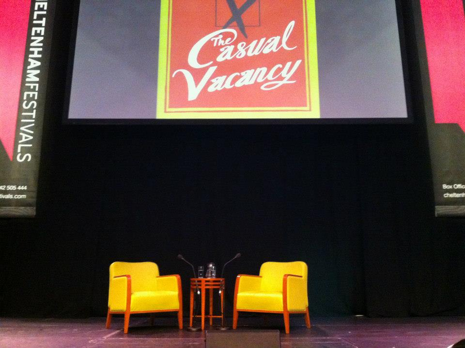

Actualités
- 20 Décembre 2012 : Le coffret Hogwarts Library
A l'occasion de Noël 2012, Bloomsbury (la maison d'édition britannique qui publie les Harry Potter en Angleterre, a enfin sorti ce très beau coffret qui réuni trois des manuels utilisés par les élèves de Poudlard :
Quidditch Through the Ages
Fantastic Beasts and Where to Find Them
The Tales of Beedle the Bard - 06 Octobre 2012 : Conférence et dédicaces à Cheltenham
A Cheltenham en Angleterre était organisé un festival de littérature prenant place au Cheltenham Racecourse. JK Rowling, invitée d'honeur, a donné une conférence sur son nouveau roman : The Casual Vacancy (en français : Une Place à Prendre)
Après avoir répondu aux questions du journaliste, elle a lu un passage du livre (à savoir, le chapitre du diner chez les Mollisson). Puis le public a pu poser des questions. A ce moment là beaucoup se sont précipités pour faire la queue afin de réaliser le rêve de toute une vie : approcher JK Rowling et même lui parler.
Tout était programmé pour aller très vite (pas le droit de prendre de photos, pas d'autres dédicaces que sur son nouveau livre), mais elle avait un mot gentil pour chaque personne qui venait. C'était extrêmement impressionnant. Elle est humaine et châleureuse, et très reconnaissante envers ses fans. (Mais on lui en veut toujours pour la mort de Dobby).
Cliquez sur une des images de la galerie pour l'ouvrir en plus grand.

